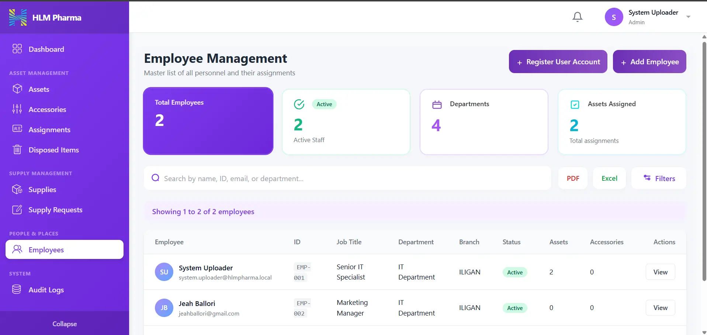
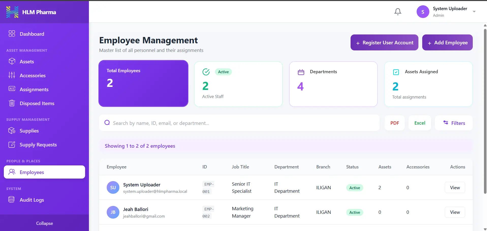

Featured Projects
Lagonglong FARMS
A full-stack farm management system for the Lagonglong Municipal Agriculture Office (MAO). Features 9 modules: farmer registry, yield monitoring, inventory management, input distribution with visitation scheduling, analytics dashboard with interactive charts, activity logging, PDF report generation, real-time notifications, and role-based access control.
 

Asset Tracking System
A full-featured asset tracking system built for HLM Pharma Inc. during internship. Tracks the complete lifecycle of company assets — from acquisition and assignment to disposal and restoration. Features a real-time dashboard with KPI cards (total assets, accessories, employees, supply items), asset status overview, total asset value reporting, monthly transaction trends, and asset distribution charts. Implements snapshot-based disposal logic to preserve complex employee/branch assignment history, with full audit trails and rigorous business rule enforcement at both UI and server layers.
Agriculture System — Laravel
A full MVC rewrite of Lagonglong FARMS using Laravel 12. Implements Eloquent ORM with proper model relationships, Blade templating, Laravel Breeze authentication, PDF generation via DomPDF, geo-tagging, AJAX-powered modals, Vite asset bundling, and a comprehensive reporting engine with 8 printable report templates.